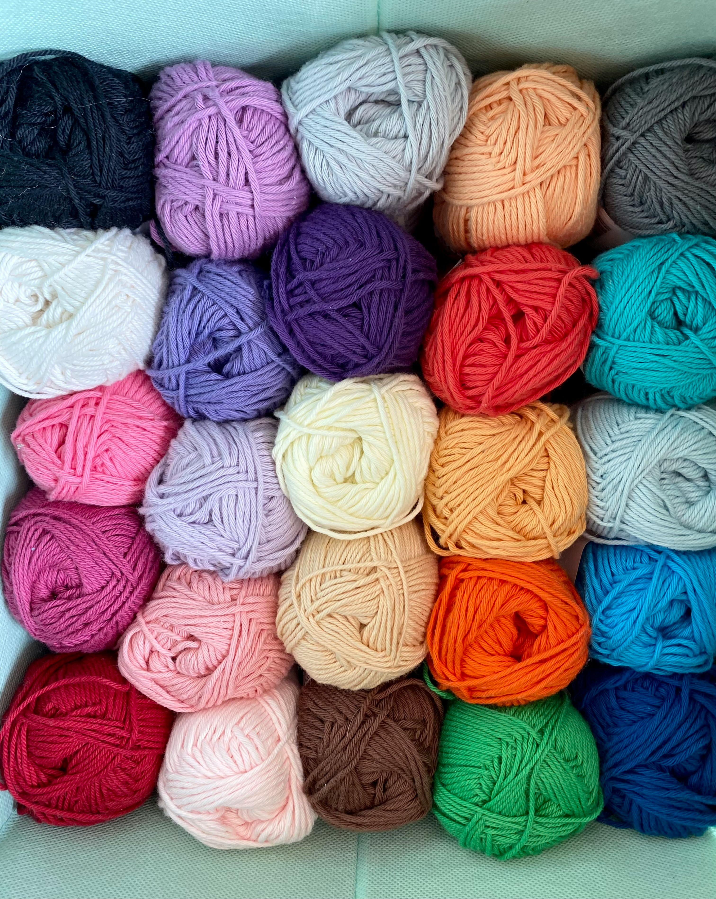

Sanya is someone who is always ready to learn and absorb knowlege. When she becomes interested in a topic, there is no stopping her from learning as much as she can about it.

Crochet has become something of a lifestyle for Sanya. She enkoys it prefusely and has even started a small business in hopes of creating something with this activity that she loves so much.

The cat colony in Sanya's backyard have become family more than random cats that she takes care of. She makes sure that they are well fed and taken care of.